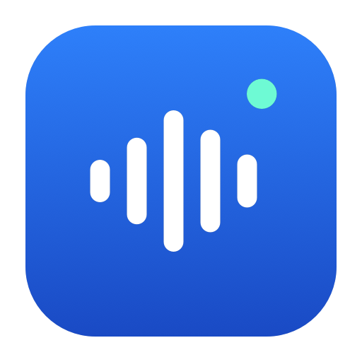
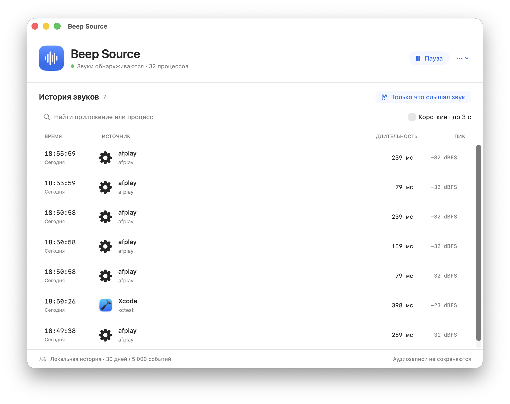

Catch the short sounds
Search the history or filter sounds lasting up to three seconds. “I just heard a sound” brings the last 30 seconds into view.

Beep SourceA sound comes and goes. Beep Source keeps the trail: which app or process played audio, when it happened, and how long it lasted.
Developer ID signed and notarized by Apple. The notarization ticket is attached to the download.

Search the history or filter sounds lasting up to three seconds. “I just heard a sound” brings the last 30 seconds into view.
Close the window and carry on. The waveform icon in your menu bar opens the log. Pause or enable launch at login when you need it.
The app measures signal levels without saving recordings. History stays on your Mac. No microphone, account or network access needed.
The release is signed by Gennadiy Zakharov using Apple Developer ID through the G2 certificate chain. It passed Apple notarization and includes the attached ticket. The packaged app passes Gatekeeper assessment. You can also build from source.
Not always. A shared system process can play a notification on behalf of another app, hiding the original sender. Browser tabs cannot be identified. Very early sounds from new processes may be recorded as unidentified; an unknown beep overlapping music can be missed.
No. It inspects digital system-audio samples to measure their level and timing, then discards them. It saves only event metadata: source, time, duration and peak. It needs system audio capture permission, not microphone access.
In ~/Library/Application Support/Beep Source/history.json. The log keeps up to 30 days or 5,000 events. You can export CSV or clear it from the app menu.
It is free to download and use. Version 1.0 requires Apple Silicon and macOS 14.2 or later. The app interface is currently Russian. The source and build instructions are on GitHub.
Open a GitHub issue with your macOS version, audio device and steps to reproduce it. You can inspect the source and build your own copy.
Get Beep Source